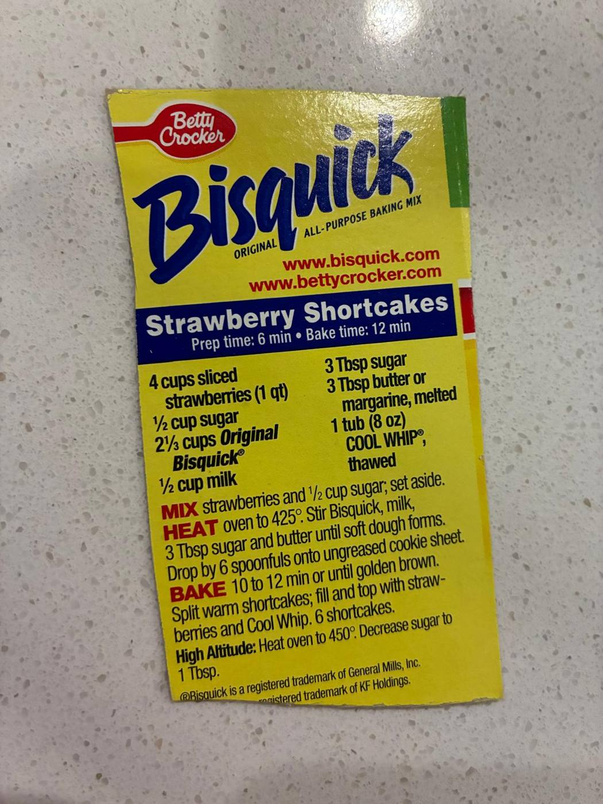

Desserts
Strawberry Shortcakes
From Bisquick
Oven425°F
Bake10–12 min
Makes6 shortcakes

Mom's original card · tap to enlarge
Ingredients
Method tap a step to mark it done
- Mix the strawberries with the ½ cup sugar and set aside.
- Heat the oven to 425°F. Stir the Bisquick, milk, 3 tbsp sugar and melted butter until a soft dough forms.
- Drop the dough in 6 spoonfuls onto an ungreased cookie sheet.
- Bake 10–12 minutes, until golden brown.
- Split the warm shortcakes; fill and top with the strawberries and Cool Whip.
Mom’s tips
- High altitude: heat the oven to 450°F and use 1 tbsp sugar in the dough.